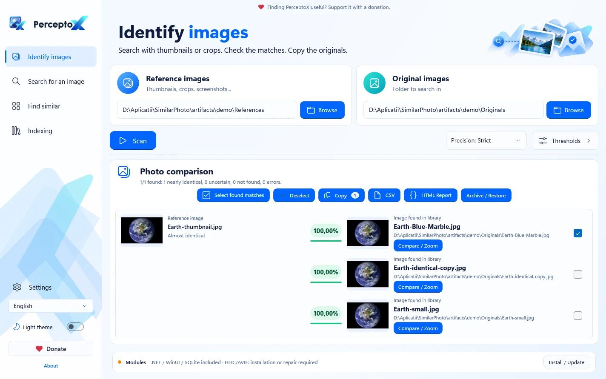
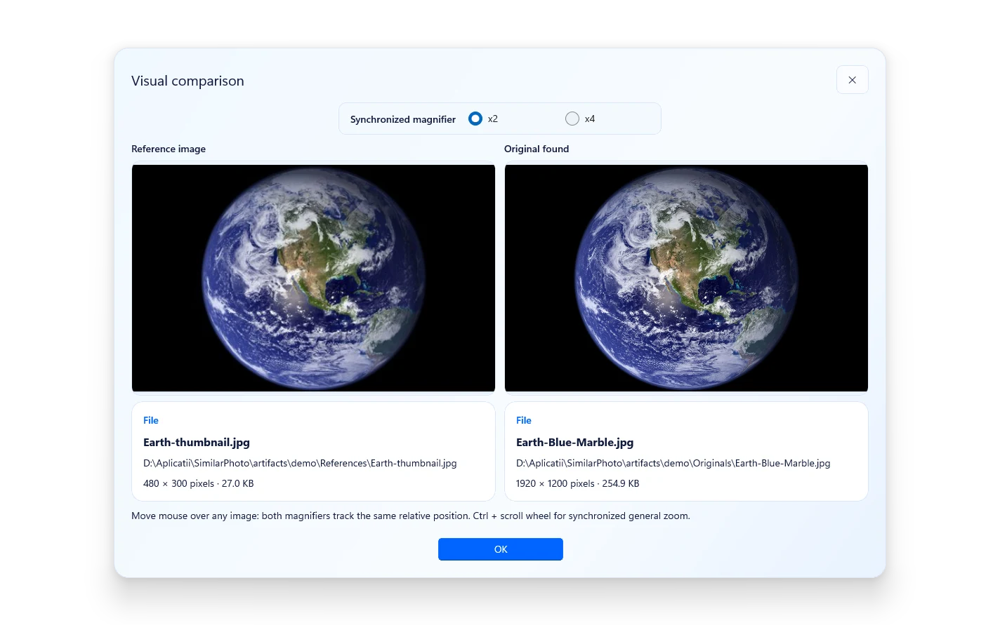

Identify images
Choose a reference folder and an original library. Scan, review possible matches and copy the originals you select.
From a small reference to the photo you need. Identify originals, inspect matches side by side and bring near-identical images into clear groups.

Your image matching runs on your computer.
Inspect the candidate before deciding what to keep.
Copy selected photos without deleting the originals.
Built around the work you actually need to do with a photo library.
Choose a reference folder and an original library. Scan, review possible matches and copy the originals you select.
Search the prepared index from one image. Drag a supported file into the app to start your review.
Group exact and near-identical photos across folders. Start with the best-ranked exemplar or invert the selection.
Reuse a local SQLite index and cached thumbnails. See progress, cancel safely and inspect errors instead of starting blindly.
Side-by-side previews, useful metadata and a synchronized x2/x4 loupe. Switch Light/Dark and language instantly.

References on one side; your original library on the other.
See progress, then compare candidates and their filenames.
Copy selected photos and export a CSV or visual HTML report.
Self-contained runtime package. Offline codec activation with consent. No separate AI service or developer SDK required.
Binary downloads are not published yet. Explore the source or check Releases for updates.
Choose the installer for shortcuts, or extract the complete ZIP and launch PerceptoX.exe.
No. Resized and recompressed images are the primary cases. Partial crops, text overlays and screenshots are harder; multi-region matching is experimental. Scores are heuristics, not probabilities.
A default similarity-score threshold, not a claim of 97% detection accuracy. Exact file equality is separate evidence. Review important results and keep backups.
No. Selection means the photo to keep/copy. Recoverable archive operations are separate and require review and confirmation; there is no permanent-delete feature for original photos.
PerceptoX-owned source is GPL-3.0-only. Dependencies keep their respective licenses; free distribution does not relicense them. Native runtime/source notices and remaining release checks are documented in the repository.
Publishing source is separate from releasing a combined runtime/codec package. Licensing provenance and clean-Windows validation are documented release gates. This page only offers direct downloads when matching assets actually exist in a published GitHub release.
Created by Prepelita Eduard. Contributions and thoughtful bug reports help PerceptoX improve.